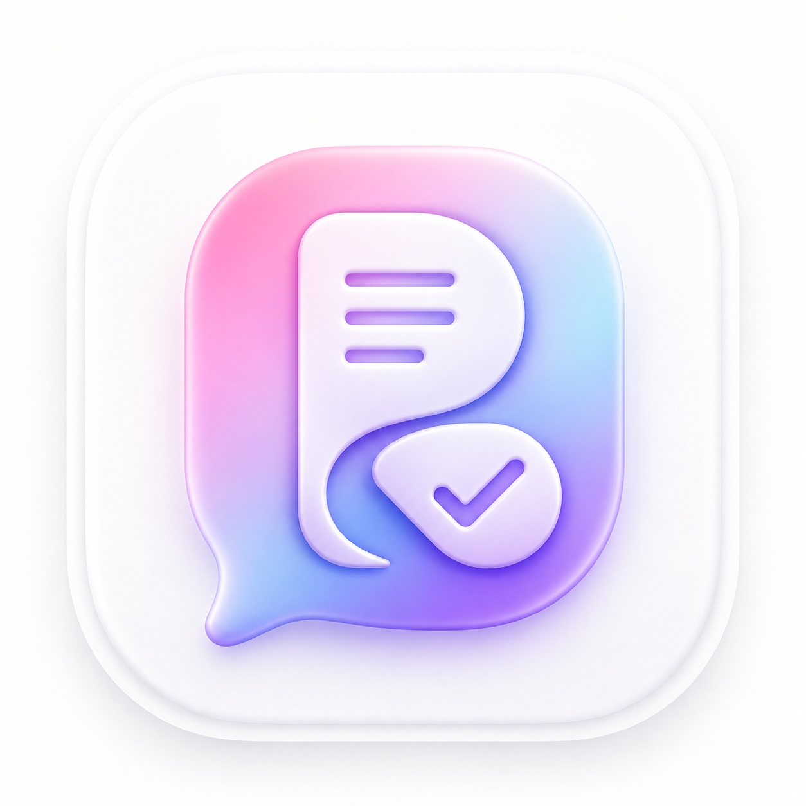

구글 로그인으로 시작
복잡한 가입 절차 없이 바로 들어와 기록을 남길 수 있습니다.

GOOGLE LOGIN · AI TRANSCRIPT · CASE PACKAGING
ROOSYCOZY
이제는 따로 옮겨 적고, 다시 분류하고, 다시 전달할 필요가 없습니다. 루지코지는 녹음·사진·메모를 받아 AI 전사, 사건별 자동 묶음, 즉시 자문 연결까지 한 흐름으로 끝냅니다.


루지코지는 좋은 기술을 앞세우기보다, 가장 귀찮고 반복적인 단계를 먼저 없앴습니다. 그래서 처음 써도 바로 이해되고, 급한 상황일수록 더 빠르게 움직입니다.
복잡한 가입 절차 없이 바로 들어와 기록을 남길 수 있습니다.
프로 라이선스는 인디스쿨 쪽지를 통해 받고, 바로 사용 흐름에 연결됩니다.
전사 대상만 고르면 AI가 빠르게 녹음을 텍스트로 바꿔줍니다.
메모·사진·녹음 태그에서 이름과 주체를 읽고 사건 단위로 정리합니다.
필요한 기록을 바로 패키징해서 자문 변호사에게 곧바로 전달할 수 있습니다.
수집, 전사, 묶음, 전달이 서로 끊기지 않도록 설계했습니다. 그래서 현장에서는 “무엇부터 하지?”보다 “바로 눌러야지”가 먼저 나옵니다.

녹음한 파일 중 필요한 것만 선택하면, 전사 대상만 골라 바로 AI 텍스트 변환을 실행할 수 있습니다.

AI 전사 결과와 사용자 메모를 같은 맥락에서 바로 보고 저장할 수 있어, 따로 옮겨 적는 시간이 줄어듭니다.
전사·메모·사진을 사건 중심으로 묶은 뒤, 필요한 묶음만 골라 변호사에게 즉시 전달할 수 있습니다.
캘린더형 보관함으로 날짜별 기록을 바로 보고, 같은 날 남긴 메모·사진·녹음을 한 흐름에서 이어서 확인할 수 있습니다. 찾는 데 시간을 쓰지 않도록, 화면 자체를 더 직관적으로 만들었습니다.

프로 라이선스는 인디스쿨 쪽지를 통해 안내받고 적용할 예정입니다. 현장 선생님이 추가 설정에 시간을 쓰지 않도록, 로그인 후 바로 쓰는 흐름에 맞춰 준비하고 있습니다.
계정 생성 없이 바로 시작합니다.
프로 라이선스 안내를 인디스쿨 쪽지로 받습니다.
전사, 자동 묶음, 변호사 연결까지 바로 이어서 씁니다.